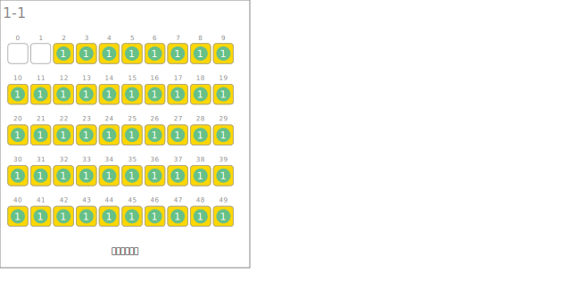
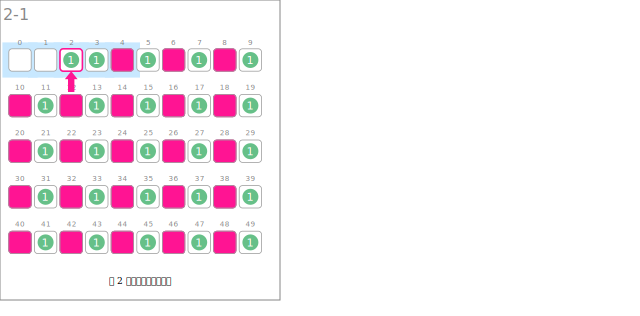
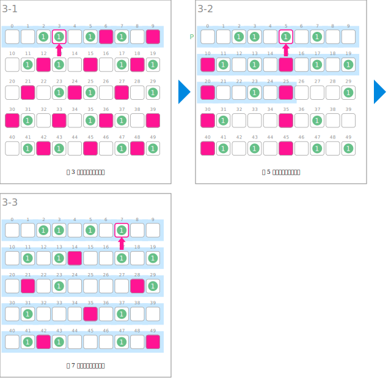
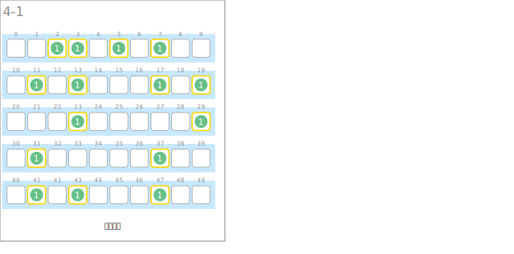

符号
| 数据 | ||
|---|---|---|
 |
素数表，如果表中 P[i] 为 1，说明 i 为素数。 | P |
| 初始化 | ||
|---|---|---|
 |
将大于等于 2 的数作为候选素数，进行初始化 | |
| 删除 2 的倍数 | ||
 |
将 2 的倍数作为合数 | P[j] ← 0 |
| 删除奇数素数的倍数 | ||
 |
剩下的数仍作为素数 | i |
|
已删除的素数的倍数作为合数 | P[j] ← 0 |
 |
确定素数表 | 区间[0, i*i] |
| 输出素数列表 | ||
 |
列举素数 | |
动画
初始化

删除 2 的倍数

删除奇数素数的倍数

输出素数列表
